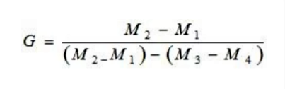

Specific Gravity
Home
Apparatus
Theory
Procedure
Observation
Result
The specific gravity of soil is determined using the relation:

Specific gravity for sample 1 = 2.586
Specific gravity for sample 2 = 2.677
Specific gravity for sample 3 = 2.60
Average specific gravity = 2.621